Übersicht
Geisterfang holen. Seine echten Forever-Spawns sind jetzt in der Pet-Karte markiert.
Streichertritt: ab hier beginnt dein echtes Range↔Melee-Weaving.
Zerbrochener Zahn campen, wenn du den schnellen Rare möchtest.
In dieser Talentroute Falke beschwören freischalten.
Stat-Priorität
| Priorität | Wert | Hinweis |
|---|---|---|
| 1 | Waffenschaden | Nah- und Fernkampfwaffe aktuell halten. |
| 2 | Beweglichkeit | Hauptwert für Schaden/Crit und Pet-Skalierung. |
| 3 | Kritische Trefferchance | Sehr stark für deine Hybrid-Spielweise. |
| 4 | Intelligenz | Mehr Mana; später zusätzlich relevant für Sorgfältiges Zielen. |
| 5 | Stärke | Hilft Nahkampfangriffskraft, meist hinter Beweglichkeit. |
| 6 | Ausdauer | Solider Solo-Puffer. |
Pets & echte Fundortkarten
| Level | Pet | Familie | Zone | Datenstand | Empfehlung |
|---|---|---|---|---|---|
| 10 | Katze | Dun Morogh | Forever-Beta bestätigt | Mein Favorit für deinen Human Hunter direkt auf Stufe 10. Selten, optisch auffällig und als Katze sehr angenehm zum Leveln. | |
| 10–17 | Katze | Dunkelküste | Viele bekannte Spawns | Früher Min-Max-Pick für Alliance: schnelle Katze und leicht in einem großen Gebiet zu finden. | |
| 25–26 | Wolf | Dämmerwald | Forever-Datenbank | Sehr guter Utility-Wolf: lernt Biss Rang 4 und Wutgeheul Rang 2. | |
| 27–28 | Katze | Vorgebirge des Hügellands | Forever-Datenbank | Starker Midgame-Damage-Pet mit 1,2 Sek. Angriffstempo. | |
| 37 | Katze | Ödland | Über Stufe 30: Launch-/Classic-Basis | Der große Damage-/Prestige-Pick: 1,0 Sek. Angriffstempo und eine der bekanntesten Hunter-Katzen. | |
| 40–41 | Wolf | Feralas | Über Stufe 30: Classic-Spawnbasis | Sehr guter Utility-Wolf mit Biss 6, Sprint 2 und Wutgeheul 3. | |
| 56–57 | Wolf | Untere Blackrockspitze | Dungeon-Fundort | Top Lehrer-/Utility-Pet für Biss Rang 8 und Wutgeheul Rang 4. |
Talentroute 10–60
Die Symbole sind die originalen WoW-/Forever-Talenticons. Die deutschen Namen wurden an die aktuellen Forever-Datenbanken angepasst.
| Level | Talent | Baum |
|---|---|---|
| 10 | 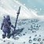 Verbessertes Fährtenlesen 1/5 | Überleben |
| 11 | Verbessertes Fährtenlesen 2/5 | Überleben |
| 12 | Verbessertes Fährtenlesen 3/5 | Überleben |
| 13 | Verbessertes Fährtenlesen 4/5 | Überleben |
| 14 | Verbessertes Fährtenlesen 5/5 | Überleben |
| 15 | 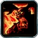 Wilde Schläge 1/2 | Überleben |
| 16 | Wilde Schläge 2/2 | Überleben |
| 17 | Überlebenskünstler 1/5 | Überleben |
| 18 | Überlebenskünstler 2/5 | Überleben |
| 19 | Überlebenskünstler 3/5 | Überleben |
| 20 | Abschreckung 1/1 | Überleben |
| 21 | Trittsicher 1/3 | Überleben |
| 22 | Trittsicher 2/3 | Überleben |
| 23 | Trittsicher 3/3 | Überleben |
| 24 | 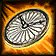 Falleneffizienz 1/2 | Überleben |
| 25 | Gegenangriff 1/1 | Überleben |
| 26 | 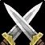 Vorteil des Raubtiers 1/5 | Überleben |
| 27 | Vorteil des Raubtiers 2/5 | Überleben |
| 28 | Vorteil des Raubtiers 3/5 | Überleben |
| 29 | Vorteil des Raubtiers 4/5 | Überleben |
| 30 | Streichertritt 1/1 | Überleben |
| 31 | 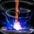 Improvisation 1/2 | Überleben |
| 32 | Improvisation 2/2 | Überleben |
| 33 | Vorteil des Raubtiers 5/5 | Überleben |
| 34 | 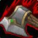 Beute aufspüren 1/2 | Überleben |
| 35 | Beute aufspüren 2/2 | Überleben |
| 36 | 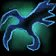 Tödliche Aspekte 1/5 | Tierherrschaft |
| 37 | Tödliche Aspekte 2/5 | Tierherrschaft |
| 38 | Tödliche Aspekte 3/5 | Tierherrschaft |
| 39 | Tödliche Aspekte 4/5 | Tierherrschaft |
| 40 | Tödliche Aspekte 5/5 | Tierherrschaft |
| 41 | Konzentriertes Feuer 1/2 | Tierherrschaft |
| 42 | Konzentriertes Feuer 2/2 | Tierherrschaft |
| 43 | 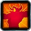 Belastbarkeit-Ausbildung 1/5 | Tierherrschaft |
| 44 | Belastbarkeit-Ausbildung 2/5 | Tierherrschaft |
| 45 | Belastbarkeit-Ausbildung 3/5 | Tierherrschaft |
| 46 | 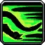 Erhöhte Tiergeschwindigkeit 1/1 | Tierherrschaft |
| 47 | 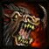 Entfesselter Zorn 1/5 | Tierherrschaft |
| 48 | Entfesselter Zorn 2/5 | Tierherrschaft |
| 49 | Entfesselter Zorn 3/5 | Tierherrschaft |
| 50 | Entfesselter Zorn 4/5 | Tierherrschaft |
| 51 | 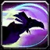 Falke beschwören 1/1 | Tierherrschaft |
| 52 | Tödliche Angriffe 1/5 | Treffsicherheit |
| 53 | Tödliche Angriffe 2/5 | Treffsicherheit |
| 54 | Tödliche Angriffe 3/5 | Treffsicherheit |
| 55 | Tödliche Angriffe 4/5 | Treffsicherheit |
| 56 | Tödliche Angriffe 5/5 | Treffsicherheit |
| 57 | 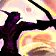 Sorgfältiges Zielen 1/5 | Treffsicherheit |
| 58 | Sorgfältiges Zielen 2/5 | Treffsicherheit |
| 59 | Sorgfältiges Zielen 3/5 | Treffsicherheit |
| 60 | Sorgfältiges Zielen 4/5 | Treffsicherheit |
Wichtige Skills
Originale WoW-Fähigkeitssymbole statt Platzhalter-Icons.
| Level | Skill | Warum wichtig? |
|---|---|---|
| 10 | Wildtier zähmen / Begleiter freischalten | Grundlage für dein Pet-System. |
| 10 | Aspekt des Falken | Standard-Aspekt für mehr Distanzangriffskraft. |
| 12 | Tier heilen | Pflicht für entspanntes Solo-Leveln. |
| 12 | Zurechtstutzen | Verlangsamt Gegner und hilft beim Kiten. |
| 16 | Mungobiss | Wichtige Nahkampffähigkeit für Survival. |
| 16 | Feuerbrandfalle | Solider Schaden auf längeren Pulls. |
| 18 | Mehrfachschuss | Sehr stark bei mehreren Zielen. |
| 20 | Gezielter Schuss | Starker Fernkampf-Hit; teilt in Forever den Cooldown mit Mehrfachschuss. |
| 20 | Aspekt des Geparden | Dein Reise-Aspekt. |
| 20 | Eiskältefalle | Starke Einzelziel-Kontrolle. |
| 26 | 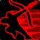 Schnellfeuer | Offensiver Cooldown. |
| 28 | Frostfalle | Flächen-Slow für Kiting und Kontrolle. |
| 30 | Totstellen | Aggro-Reset und Notfallwerkzeug. |
| 30 | Streichertritt | Dein Survival-Meilenstein aus dem Talentbaum. |
| 34 | Sprengfalle | Starker AoE-Schaden. |
| 40 | 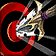 Salve | AoE für stabile Gruppen. |
| 40 | Aspekt des Rudels | Gruppen-/Reiseutility. |
| 51 | Falke beschwören | In dieser Levelroute erst später erreichbar; in längeren Kämpfen verwenden. |
Rotationen nach Levelbereich
10–17
Mal des Jägers auf stärkere Ziele → Begleiter angreifen lassen → Automatischer Schuss → Schlangenbiss → Arkaner Schuss. Kommt das Ziel an dich heran: Raptorstoß, Zurechtstutzen und wieder Abstand.
18–24
Mal des Jägers → Begleiter → Schlangenbiss → Mehrfachschuss bei mehreren Zielen → Arkaner Schuss → automatische Schüsse. Nahkampf nur ergänzend.
25–29
Gleicher Fernkampf-Start, aber schon Weaving üben: schießen → kurz rein für Raptorstoß/Mungobiss → wieder auf Abstand.
30–33
Mal → Schlangenbiss → Mehrfach-/Arkanschuss → rein mit Raptorstoß → Mungobiss → Falle → Streichertritt → Bewegungsschub nutzen und wieder auf Range.
34–39
Beute aufspüren macht Mal des Jägers noch wichtiger. Sprengfalle bei Gruppen. Nicht in der Dead Zone stehen bleiben.
40–50
Einzelziel weiterweaven. Mehrere Ziele: Mehrfachschuss + Sprengfalle + Salve, sobald die Gruppe stabil steht.
51–60
Falke beschwören bei längeren Kämpfen einsetzen. Danach normale Weave-Priorität; auf kurzen Mobs teure DoTs/Fallen eher sparen.
Empfohlenes Gear
Level 16–24
frühe große UpgradesLevel 25–35
Übergang in echten SurvivalLevel 30–40
Stufe-30-DungeonzieleLevel 37–45
Melee-Waffen-MeilensteinLevel 40–50
starke Quest-/DungeonwerteLevel 48–55
Maraudon & BlackrocktiefenLevel 54–60
Richtung EndgameLevel 58–60
starkes Level-60-ZielLevelplan
| Levelbereich | Dein Plan |
|---|---|
| 10–14 | Pet-Quest → Geisterfang → Biss/Klaue nachlernen → Verbessertes Fährtenlesen 5/5. |
| 15–20 | Wilde Schläge + Überlebenskünstler. Frühe Dungeons mit Quests. Mehrfachschuss 18; Gepard + Gezielter Schuss 20. |
| 20–30 | Pet-Upgrades in Dämmerwald/Hügelland. Auf 30 Totstellen + Streichertritt. |
| 30–40 | Aktiv Range/Melee weaven. Beute aufspüren 34–35. Zerbrochener Zahn ab 37 versuchen. |
| 40–50 | Salve, Schwere Rüstung und stärkere Pet-Ränge. Maraudon wird interessant. |
| 50–60 | Falke beschwören in dieser Route auf 51. BRD/BRS; Blutaxtworg als Utility-/Lehrer-Pet. |